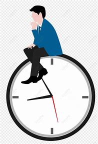

개인 홈페이지
포트폴리오와 팀 프로젝트, 이번에 진행한 SECON 2025에 대한 정보를 제공합니다.
포트폴리오
개인의 정보와 이력에 대해 소개합니다.
팀 프로젝트
기간 동안 진행한 팀 프로젝트와 팀원을 소개합니다.
SECON 2025
세계보안엑스포에서 최신 보안 트렌드를 경험하세요.
시간표 보기
이번 학기 웹 프로그래밍 시간표를 확인할 수 있습니다.
자주 묻는 질문 (FAQ)
보안 컨설턴트, 침해사고 대응 전문가, 악성코드 분석가, 모의해커, 보안
솔루션 개발자 등 다양한 진로가 있습니다.
수학적 사고력이 중요하지만, 프로그래밍을 통해 실습 중심으로도 학습할
수 있습니다.
Python, C/C++, Java, 그리고 웹 보안을 위한 JavaScript를 추천합니다.
정보보안기사, CISSP, CEH, OSCP 등이 대표적인 자격증입니다.
네트워크, 시스템, 프로그래밍, 리버싱, 취약점 분석 등 다양한 분야를
공부해야 합니다.